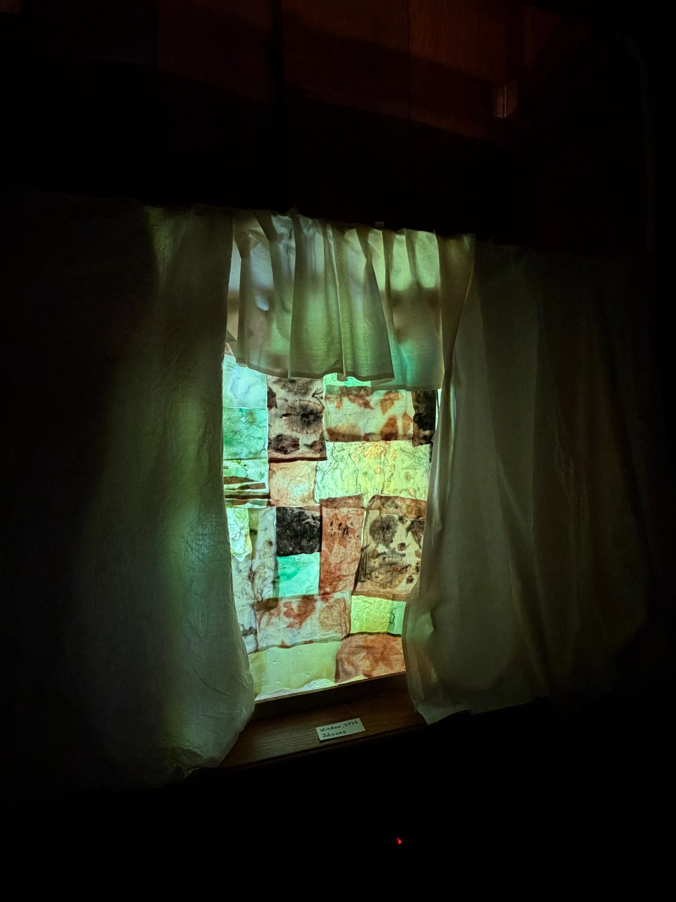
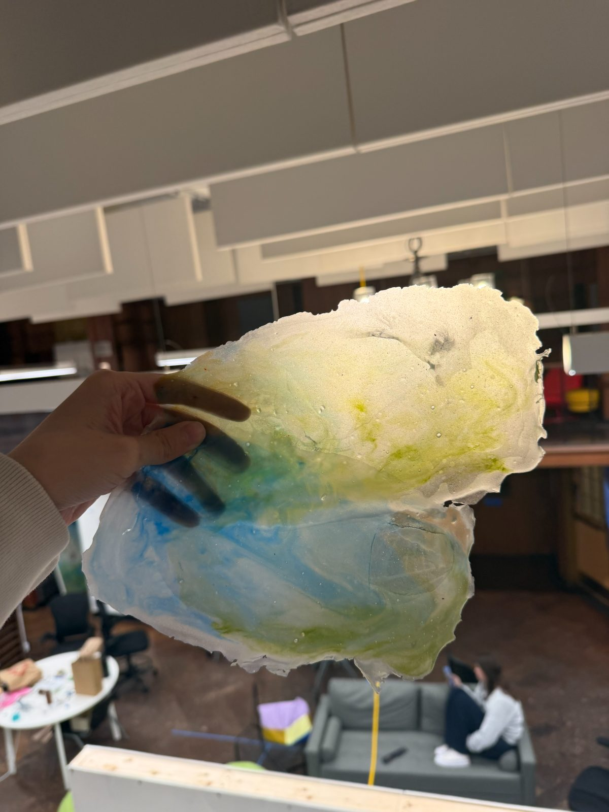
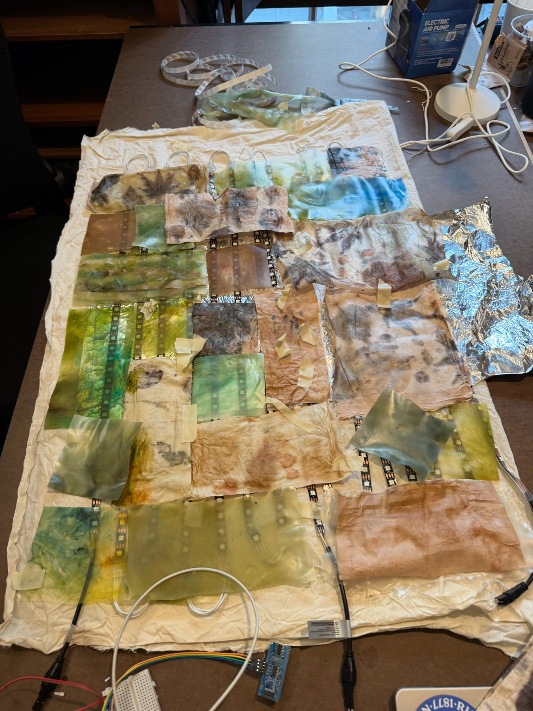
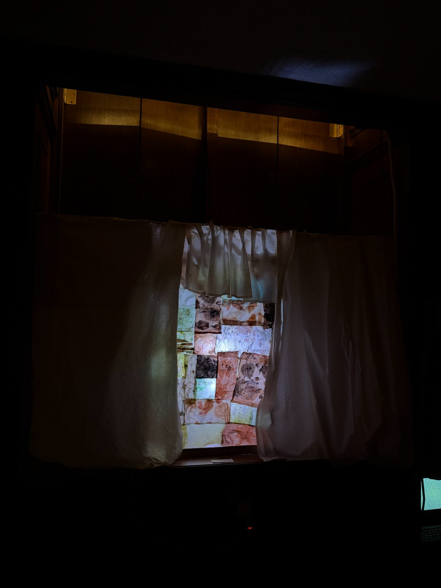

Role
Concept · material research · circuit · build
A wall-mounted window with nothing behind it. It reads the room's brightness and whether someone is standing close, then answers with green and ochre light through a cast bioplastic membrane.
A wall-mounted window with no view behind it.



A photoresistor for room brightness and an ultrasonic sensor for presence. Those are the only two inputs; there are no controls.
559 LEDs on aluminum-backed fabric. The reflective backing scatters the light, so the surface glows evenly instead of showing hundreds of points.
Cast sheets of water, glycerin, starch, and gelatin, some reinforced with muslin, patterned with leaf tannin and liquid dye, joined into a larger membrane and framed with wood.
